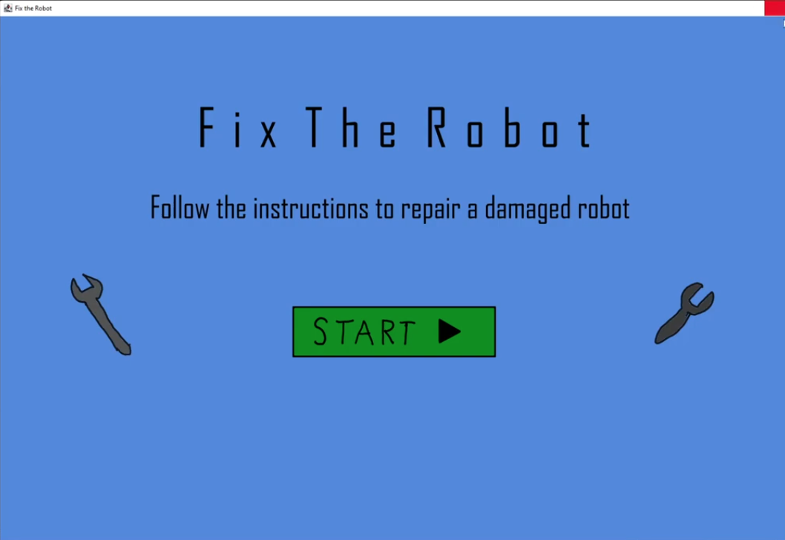
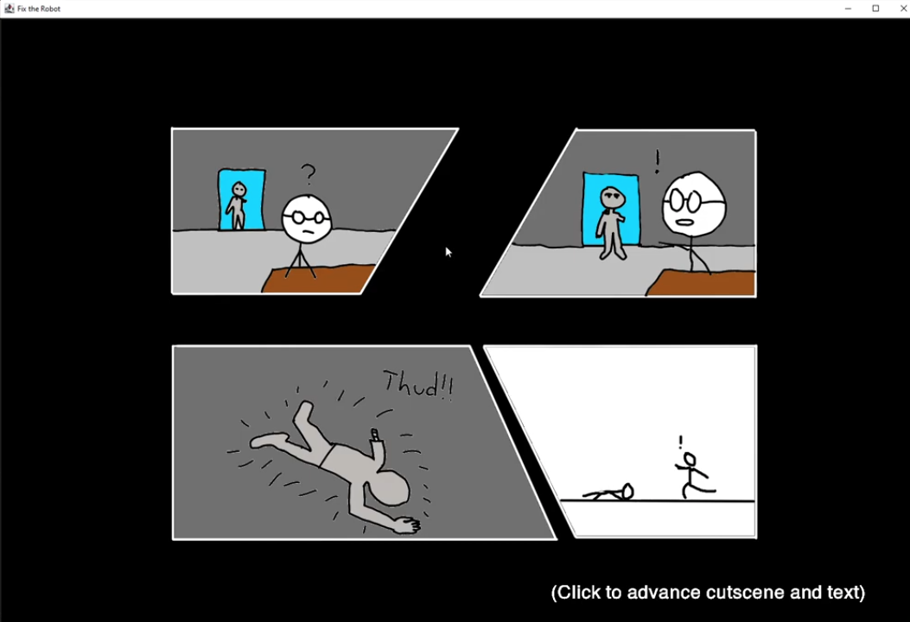
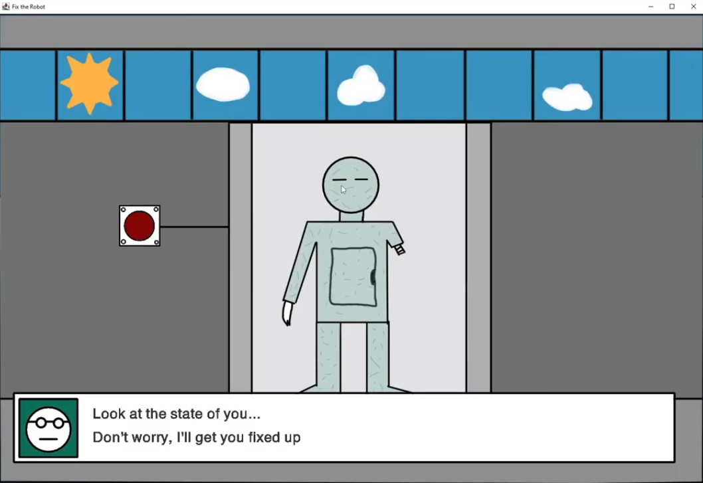
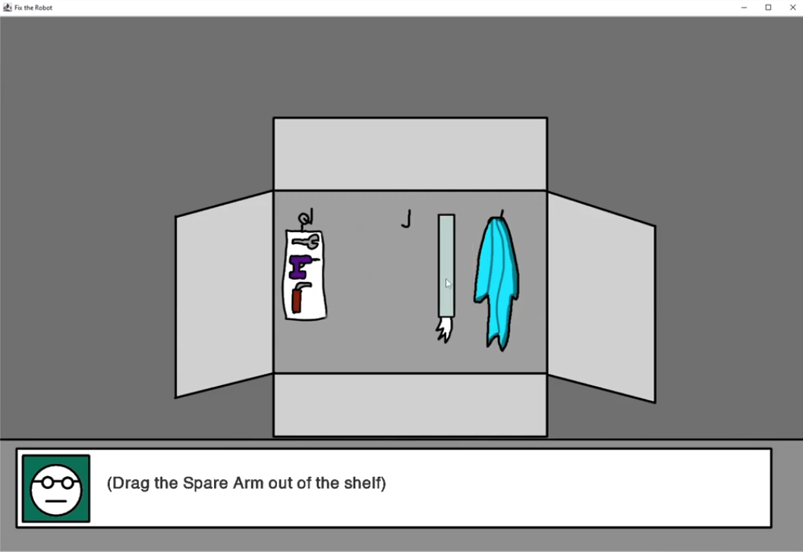

Process Analysis Template 1

Pictured above are early sketches and ideations used to figure out layouts and potential ideas for the final poster. (Shortened Description for Template)
Hello, my name is Tejas, a third year student at Simon Fraser University currently studying in the School of Interactive Arts program (SIAT), with the intention of going into focuses that involve some form of visual design, such as UI/UX or web development as examples.
Feel free to contact me for any business inquiries. (Shortened for Template)
tsa193@sfu.ca LinkedIn
Pictured above are early sketches and ideations used to figure out layouts and potential ideas for the final poster. (Shortened Description for Template)
For my project, I chose to make the scenario about repairing a battle-damaged robot with multiple steps involved, such as re-attaching an arm, and recharging its battery. I originally wanted to create 3 distinct tasks, but scaled it back to 2 for time constraints. One struggle I had during the process of this assignment was figuring out how to apply concepts introduced later in the course, such as factories and perlin noise, so my solutions mostly came down to asking my TAs for assistance as well as reading over the readings/examples provided. Time constraints were a big issue in general, but I ultimately managed to get the project finished, albeit with some elements needing to be scaled back, mainly the art assets.



